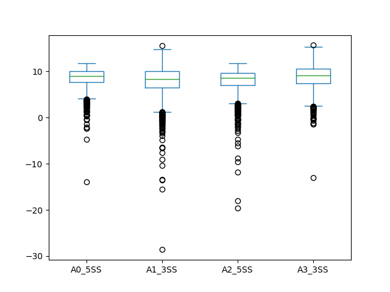
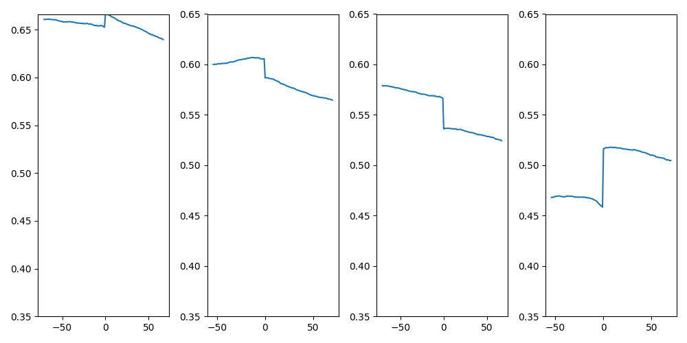
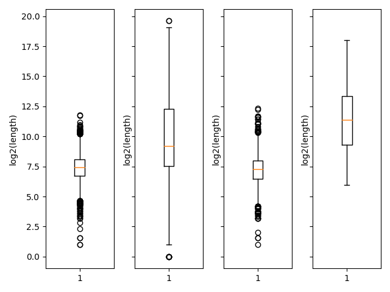

序列特征
剪切位点强度
ASTK的剪切位点强度计算基于MaxEntScan的Perl脚本的重实现。
spliceScore 用于计算5'/3'剪切位点强度。sss是其别名。 参数设置如下：
- -e: AS事件文件地址
- -od：输出目录
- -fi：基因组fasta序列文件
- -app：事件是什么软件的输出 [auto|SUPPA2|rMATS]
- -p：进程数，默认为4
示例
$ mkdir sss
$ astk sss -e result/fb_e11_based/psi/fb_p0_SE_high.psi -od sss/fb_p0_SE_high -fi GRCm38.primary_assembly.genome.fa
$ tree sss/fb_p0_SE_high
├── A0_5SS
│ ├── A0_5SS.bed
│ └── A0_5SS.fa
├── A1_3SS
│ ├── A1_3SS.bed
│ └── A1_3SS.fa
├── A2_5SS
│ ├── A2_5SS.bed
│ └── A2_5SS.fa
├── A3_3SS
│ ├── A3_3SS.bed
│ └── A3_3SS.fa
├── splice_scores_box.png
└── splice_scores.csv
4 directories, 10 files
其中bed文件为bed 剪切位点区域的坐标，对于5'位点， exon部分3nt,intron 6nt, 共9nt的长度；对于3'位点， exon部分3nt,intron 20nt, 共23nt的长度。 其中fa文件为对应区域的fasta序列，对于负链的序列为反向互补序列。 splice_scores.csv 为剪切位点强度的csv文件 splice_scores_box.png剪切强度箱型图

GC 含量
gcc 用于计算各个剪切位点侧翼区间的GC含量值。 参数设置如下：
- -e: AS事件文件地址
- -od：输出目录
- -fi：基因组fasta序列文件
- -bs: bin size 或滑动窗口大小
- -ef: exon 侧翼长度
- -if：intron 侧翼长度
- -app：事件是什么软件的输出 [auto|SUPPA2|rMATS]
- -p：进程数，默认为4
示例：
$ mkdir gcc
$ astk gcc -e result/fb_e11_based/psi/fb_p0_SE_high.psi \
-od gcc/fb_p0_AF_high -ef 150 -if 150 -bs 75 \
-fi GRCm38.primary_assembly.genome.fa
$ tree gcc/fb_p0_AF_high
├── A1_5SS
│ ├── A1_5SS_dws.bed
│ ├── A1_5SS_dws.fa
│ ├── A1_5SS_dws_gcc.csv
│ ├── A1_5SS_ups.bed
│ ├── A1_5SS_ups.fa
│ └── A1_5SS_ups_gcc.csv
├── A2_3SS
│ ├── A2_3SS_dws.bed
│ ├── A2_3SS_dws.fa
│ ├── A2_3SS_dws_gcc.csv
│ ├── A2_3SS_ups.bed
│ ├── A2_3SS_ups.fa
│ └── A2_3SS_ups_gcc.csv
├── A3_5SS
│ ├── A3_5SS_dws.bed
│ ├── A3_5SS_dws.fa
│ ├── A3_5SS_dws_gcc.csv
│ ├── A3_5SS_ups.bed
│ ├── A3_5SS_ups.fa
│ └── A3_5SS_ups_gcc.csv
├── A4_3SS
│ ├── A4_3SS_dws.bed
│ ├── A4_3SS_dws.fa
│ ├── A4_3SS_dws_gcc.csv
│ ├── A4_3SS_ups.bed
│ ├── A4_3SS_ups.fa
│ └── A4_3SS_ups_gcc.csv
└── gcc.png
4 directories, 25 files

exon/intron 长度
elen 用于计算相邻2个剪切位点之间的元件长度。 参数设置如下：
- -e: AS事件文件地址
- -od：输出目录
- -log: 将长度值进行log2转换
示例：
$ mkdir len
$ astk elen -e result/fb_e11_based/psi/fb_e11_p0_AF_high.psi -od len/fb_p0_AF -log
$ ls len/fb_p0_A
element_len.csv element_len.png
